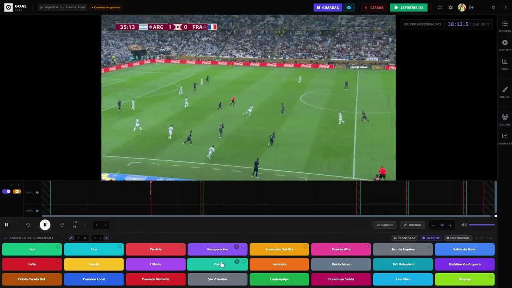

Del video crudo al informe,
sin salir de una pantalla.
Guía rápida del flujo real de trabajo en Goal Labs — para que llegues al primer partido tagueado en minutos, no en un manual de 200 páginas.
Tagueás
Configurás tus tags con hotkeys. Una tecla = un evento registrado, sin pausar el video.
Dibujás / verificás
Telestrator con 11 herramientas sobre el frame exacto. Línea de offside por homografía cuando hace falta.
Analizás
Estadísticas por jugador y equipo, momentos destacados, insights con IA sobre lo que pasó en el partido.
Exportás / informás
Clips MP4, reels 9:16 por jugador, FCP XML para tu editor, o un reporte PDF listo para el cuerpo técnico.
Esta es la configuración de fábrica. Cada tag es editable y podés crear los tuyos con la tecla que quieras — el criterio es el tuyo, no el nuestro.
Seguimiento automático en el telestrator
El spotlight/círculo ahora puede seguir a un jugador solo: dibujás una caja sobre él en un frame pausado y el sistema genera el recorrido automáticamente — sin animar cada keyframe a mano.
Todo lo que necesitás en una sola pantalla.
Tagging con hotkeys
Configurá tus propias teclas. Goles, tiros, pérdidas — todo con su minuto exacto.
Telestrator completo
11 herramientas de dibujo con animación: flechas, zonas, spotlight, líneas y texto.
Offside con perspectiva
Línea geométrica por homografía — el mismo principio que usa el VAR profesional.
Insights + estadísticas con IA
Generación de etiquetas, análisis de patrones y estadísticas avanzadas por jugador y equipo.
Reels + export a tu editor
Reels 9:16/16:9 por jugador con seguimiento de la jugada y FCP XML para Premiere/DaVinci. El export MP4 de clips es gratis.
Biblioteca + PDF + LPF Play
Nube multi-dispositivo, reportes PDF (partido/jugador/scouting) y planteles predefinidos.
Probá Pro 15 días,
sin tarjeta.
Se activa desde "Ver planes" dentro de cualquier función Pro de la app. Si tenés dudas sobre tu flujo de trabajo, escribinos.